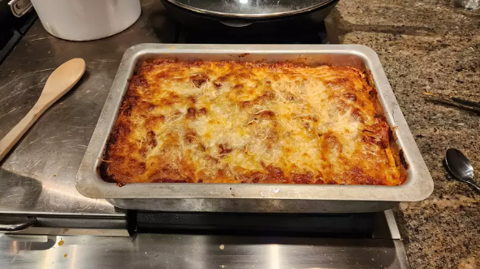

Lasagna

Description
Lasagna is a type of pasta, made of very wide flat sheets. Lasagna also refers to an Italian dish made of stacked layers of lasagna alternating with fillings such as ragù, béchamel sauce, vegetables, cheeses, and seasonings and spices (sourced from Wikipedia).
Ingredients
- Meat, any kind (preferably sweet Italian sausage and lean ground beef);
- Onion, garlic;
- Can of crushed tomatoes;
- Sugar;
- Spices and seasonings (preferably parsley, basil leaves, salt, Italian seasoning, fennel seeds, and black pepper);
- Lasagna noodles;
- Cheese (preferably parmesan, mozzarella, ricotta);
- Egg.
Steps
- Make the meat sauce;
- Cook the noodles;
- Make the ricotta mixture;
- Layer the lasagna according to the following instructions:
- Meat sauce;
- Noodles;
- Ricotta mixture;
- Mozzarella slices;
- Meat sauce;
- Parmesan cheese;
- Repeat the layers, then top with remaining Parmesan;
- Cover with foil and bake for about 50 minutes in an oven preheated to 375 degrees F (you should take off the foil after the first 25 minutes);
- Let the lasagna rest for about 15 minutes before serving.
Main page